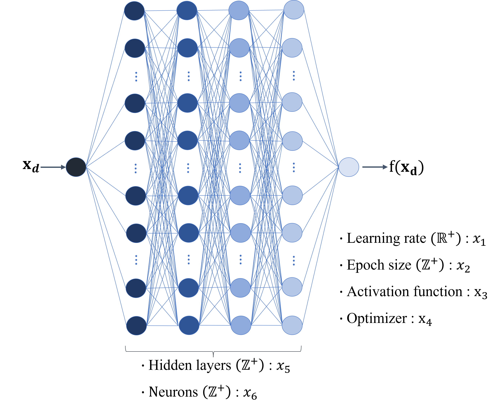
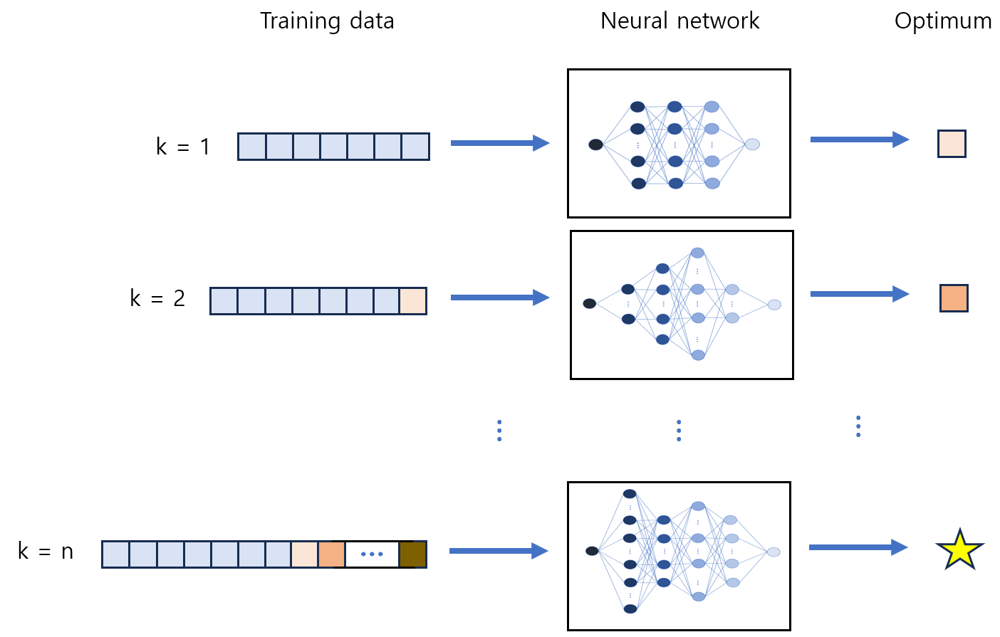

Hyperparameter Optimization (HPO)
Engineering design optimization frequently relies on physics-based models and simulations, which can be computationally expensive due to iterative evaluations. Surrogate models, which act as proxies for the full models, can significantly reduce computational demands while maintaining acceptable accuracy. Two main approaches to developing surrogate models are one-shot and sequential sampling. One-shot sampling involves generating a data set from a predefined number of samples to fit a surrogate model, while sequential sampling iteratively refines the surrogate by adding samples in areas of interest, improving accuracy.
Several methods exist for surrogate modeling, including polynomial regression, kriging, radial basis functions, and neural networks (NNs). Kriging is popular for sequential sampling due to its ability to provide both predictions and uncertainty estimates, but it becomes computationally expensive with large data sets and high-dimensional spaces. NNs, while capable of handling large, nonlinear data sets, traditionally lack direct uncertainty estimation, which is crucial for balancing exploration and exploitation in optimization.
{kind=link}

Figure 1 : Neural network with hyperparameter
HPO is essential for improving NN performance and efficiency, especially in dynamic environments like sequential sampling. Traditional HPO methods, such as grid and random search, are simple but often inefficient for large search spaces. Advanced HPO strategies are needed to navigate the hyperparameter (HP) space more effectively. The documentation considers HPO strategies for NNs in both one-shot sampling and sequential sampling in surrogate-based optimization (SBO). The evaluation focuses on metrics like time cost, the quality of the converged optimum, and the sample size required for convergence. For the HPO in sequential sampling, a predetermined number of samples will dictate the number of iterations. As the NN identifies an optimum using the current training dataset, this optimum is added to the training set, and the NN’s HPs are adjusted sequentially. This iterative process continues, refining the NN’s predictions and narrowing the design space.
{kind=link}

Figure 2 : Adatively tuning hyperparameters of neural network in sequential sampling
Additionally, intermittent adaptive HPO is explored to addresses the potential limitations of sequential sampling, such as the minor impact of single infill points on optimization results.
Introduction
The initial pages of the documentation provide a thorough explanation of the setup and basic instructions of required packages.
HPO
After you have successfully set up the requirements and examined the fundamental guides, you can progress to explore HPO with several independent subsystems presented below.
Data Analysis
Once you generate and acceess the output, you can visualize it to various formats with following methods: